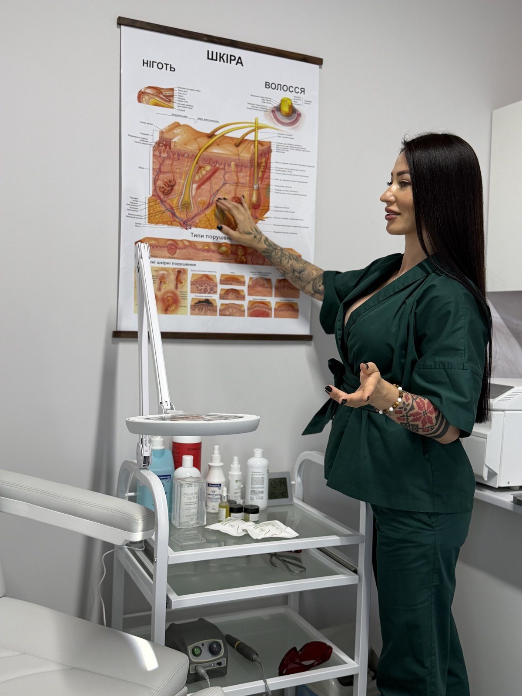
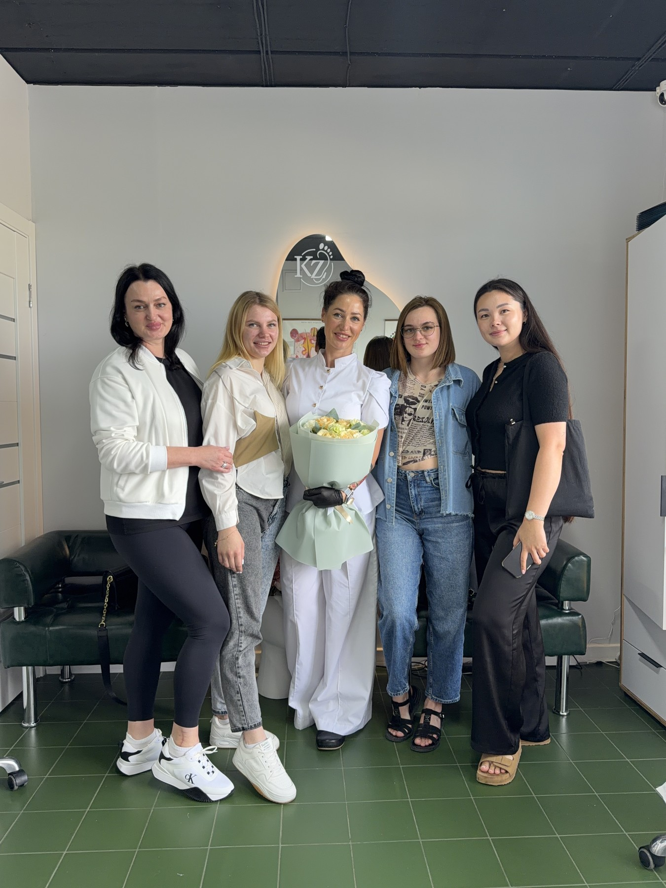

90% практики на реальних моделях зі складними випадками: врослі нігті, оніхомікоз, гіперкератоз, корекційні системи. Офіційний диплом та підтримка випускників.

Фундаментальне занурення в клінічну подологію, біомеханіку, роботу з лікарями та побудову власного особистого бренду з високим чеком.
Глибока диференційна діагностика стану шкіри стоп. Розробка індивідуального протоколу відновлення, апаратна обробка без перегріву та травматизації, довгострокова профілактика.
Видалення стрижневих, піднігтьових та міжпальцевих мозолів. Виготовлення індивідуальних розвантажувальних елементів, кінезіотейпування та оклюзійні перев'язки.
Робота скальпелем та порожнистими лезами. Застосування лікувальних оклюзійних і знімних пов'язок, підбір професійної космецевтики для повного загоєння шкіри.
Визначення першопричини підвищеної пітливості. Складання комплексного домашнього та салонного протоколу, усунення запаху, відновлення гідроліпідного бар'єру.
Анатомія ураженого нігтьового апарату. Забір біоматеріалу на аналізи, робота в тандемі з дерматологами, безпечна апаратна чистка оніхолізису та грибкових уражень.
Безопераційне виведення врослого кута без болю та зривання нігтя. Грануляції, тампонування, розрахунок сил натягу та ідеальна фіксація титанової нитки.
Христина Жалейко передає не лише мануальні техніки, а й готову систему особистого бренду: упаковка Instagram, подолання страху високого чека, комунікація зі складними пацієнтами та юридичні стандарти приватної практики.
Усі розхідні матеріали, апарати, фрези, моделі та засоби захисту надаються центром у повному обсязі.
Повний вхід у професію з нуля або підвищення для майстрів естетичного педикюру. Анатомія стопи, дезінфекція та стерилізація, робота скальпелем та апаратом, тріщини, мозолі, гіпергідроз.
Найбільш затребувана та високооплачувана процедура в подології. Безопераційна корекція врослого та деформованого нігтя. Правильний розрахунок натягу, підбір діаметра дроту, установка композиту.

"Я навчу вас бачити стопу очима лікаря. Моя мета на курсі — щоб ви не просто повторювали рухи за мною, а чітко розуміли біомеханіку, причини деформацій та вміли безпечно допомогти навіть у найбільш запущених випадках без страху зробити пацієнту боляче."
Залиште заявку на безкоштовну консультацію з інструктором щодо підбору програми навчання.